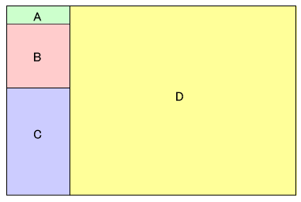

This reference manual describes TWL-SDK functions provided for NITRO and TWL application developers. It does not include descriptions of the NITRO and TWL platforms.
The TWL-SDK reference page consists of four frames. The reference manual cannot be viewed by browsers that do not display frames.

The purpose of each frame is explained in the following list.
Frame A displays a link to return to the top and a link for a list of functions.
Frame B displays links for each library category.
Frame C displays a list of libraries further classified by function type.
Frame D displays a list of functions and descriptions of functions.
) and TWL () IconsThe and icons have the following meaning.
Pages that display this icon are relevant to the development of NITRO-only ROMs or the development of hybrid ROMs that support both NITRO and TWL. There is no need to reference these pages when developing a TWL-only ROM.
Pages that display this icon are are relevant to the development of TWL ROMs or the development of hybrid ROMs that support both NITRO and TWL. There is no need to reference these pages when developing a NITRO-only ROM. Some pages might display only the TWL icon even if the function is able to get return values in NITRO mode.
Pages that display both icons are relevant regardless of the platform or type of ROM being developed.
2008/10/07 Initial version.
CONFIDENTIAL